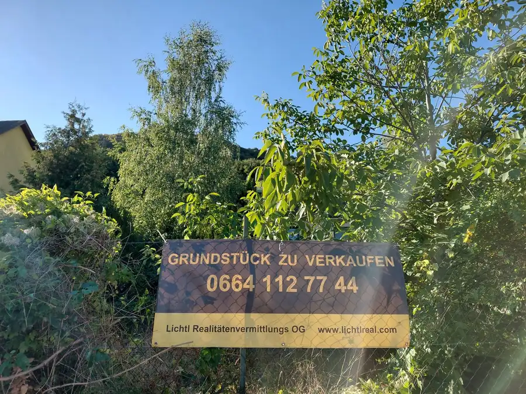
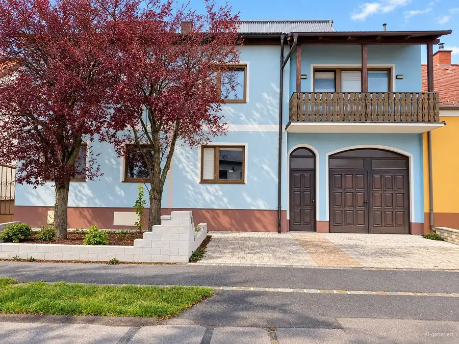
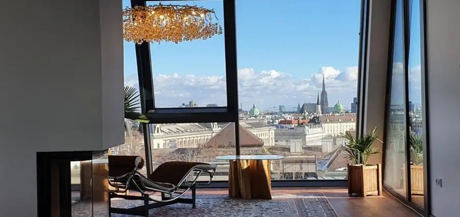

Aktuálna ponuka
Nehnuteľnosti, ktoré ponúkam
7 nehnuteľností na predaj a prenájom. Vyberte typ, alebo napíšte lokalitu.
7 z 7
 BytNové
965 000 €Predaj 2-izbového bytu, Lange Gasse, Lange Gasse, Wien 8., Josefstadt
Wien 8., Josefstadt
1,562.5 m²
BytNové
965 000 €Predaj 2-izbového bytu, Lange Gasse, Lange Gasse, Wien 8., Josefstadt
Wien 8., Josefstadt
1,562.5 m²
 Rodinné domyNové
249 900 €Predaj rodinného domu, Neusiedl am See
Illmitz
5-izbový131.5 m²
Rodinné domyNové
249 900 €Predaj rodinného domu, Neusiedl am See
Illmitz
5-izbový131.5 m²
 Rodinné domy
205 000 €Predaj rodinného domu, Neusiedl am See
Tadten
5-izbový537 m²
Rodinné domy
205 000 €Predaj rodinného domu, Neusiedl am See
Tadten
5-izbový537 m²

Pozemok 599 000 €Predaj pozemku na bývanie, Carnuntumstraße, Carnuntumstraße, Bruck an Hainburg an der Donau 1856 m² Rodinné domy
590 000 €Predaj rodinného domu, Neusiedl am See
Podersdorf am See
9-izbový830 m²
Rodinné domy
590 000 €Predaj rodinného domu, Neusiedl am See
Podersdorf am See
9-izbový830 m²

Rodinné domy 379 000 €Predaj rodinného domu, Gänserndorf Engelhartstetten 6-izbový1279 m²
BytNové 3 980 000 €Predaj 4-izbového bytu, Lange Gasse, Lange Gasse, Wien 8., Josefstadt Wien 8., Josefstadt 5-izbový235 m²Tomuto výberu zatiaľ nezodpovedá žiadna ponuka. Napíšte mi, čo hľadáte.